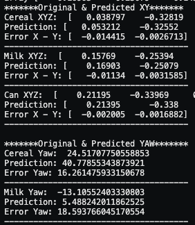

Robots are increasingly being used in warehouses to automate the picking and packing of goods. This is a highly repetitive task that is prone to human error. Computer vision models can be used for object detection, localisation and pose prediction, which are essential for robotic manipulation.
The client for this project, a regional SME in manufacturing-process automation, was seeking to digitise its business processes by designing and developing a practical, Industry 4.0, robotics application for bin picking. The application utilises deep learning, advanced reinforcement learning, and computer vision algorithms to accurately and efficiently pick objects from a bin and place them in designated areas. The goal is to improve production efficiency and reduce human error in the manufacturing process.
Notably, this project exclusively relies on sensors and components only available in real-world setups, ensuring practical relevance.
The most intriguing aspect of this project for me was observing how different AI systems collaborated to accomplish a single task. I employed various AI techniques, including reinforcement learning, where the AI teaches itself to perform tasks without relying on pre-existing data. For example, we trained the robot arm to move from point A to point B and determine which motors to use. By rewarding the robot when it performed correctly and penalizing it for errors, we created a reward function. The robot earned points for getting closer to its target, and it learned to optimize its movements accordingly. Occasionally, the robot would apply excessive force in order to gain as much reward points, which could be dangerous. As a result, we implemented a system of penalty points to discourage such behaviour. It is interesting and almost fun to see a robot train itself.
,
,
Techniques
Used Industry leading
Step 1
Robotics Simulation
This project utilizes Robosuite, a modular robot learning simulation framework. Simulation-based deployment is chosen for safety and cost-effectiveness. Simulations enable repeated testing with consistency, enhancing accuracy. The environment features a front-view virtual camera, generating synthetic visual data for AI model training and evaluation.
Notably, the simulation provides precise item coordinates, a feature absent in real-world scenarios. However, this project solely relies on robot telemetry outputs, mirroring real-life conditions, with item coordinates exclusively used for model training.
Object Detection & Localisation
The robot uses an object detection model to classify and detect three items: a cereal box, a milk carton, and a can. In real-life applications, the model can be adapted to classify and detect a wide range of otheritems beyond the specified.
Deep learning (DL), specifically the Yolov5 architecture, is the used technique for detecting the items. Yolov5 is known for its swift speed and high accuracy, and in this case, it's pretrained on the Coco128 dataset, capturing rich features from various objects and backgrounds. This strategy is selected to enhance the final model's performance while accelerating its execution.
The robot arm needs to know the coordinates and the rotation of the items to pick them up. In order to achieve localisation, a deep learning model is used to predict this. This deep learning model is made with the PyTorch module The models in action

Object Detection Results: This model is evaluated based on its accuracy with new data after training. The accuracy for cereal boxes is 100%, for milk cartons 98%, and for cans 99%.
Object Localisation Results: This model demonstrates an overall accuracy of 82.5%. Moreover, the X and Y predictions exhibit a particularly high level of accuracy at 97%, while the rotation prediction displays a lower accuracy at 40%. Notable, even with potentially higher errors, the robot can often still successfully pick up the item.
Step 2
Reinforcement Learning
The reinforcement model (RL) creates an agent that controls the robot that needs to pick up and sort items. This model is able to interpret the environment and take actions based on trial and error. In other words, this model learns itself which of the 7 motors it has to activate, to go to a set position.
Step 3
MLOPS
MLOps, short for Machine Learning Operations, is the practice of combining Machine Learning, DevOps, and Data Engineering to facilitate the development, and monitoring of ML models in production. MLOps is a set of practices that enables you to manage the entire lifecycle of machine learning models. For this project, Microsoft Azure has been used to productionise and deploy my model's to a cloud platform to use as a package.
Step 4
LET'S CONNECT
Michael Nederhoed | Portfolio Showcase | Made by Michael Nederhoed 2022